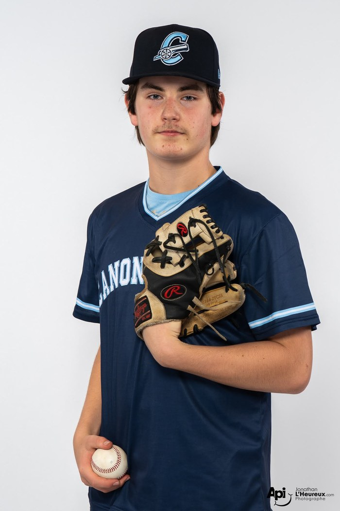

Le joueur à deux volets des Canonniers dans le plus haut circuit 15U AAA du Québec — champion frappeur (,467) et meneur de la ligue pour les coups sûrs en 2026, avec une fiche de 5-2 et une MPM de 1,99 au monticule. The Canonniers' two-way engine in Québec's top 15U AAA circuit — the league's 2026 batting champion (.467) and hits leader, and a 5-2 arm with a 1.99 ERA on the mound.
Parmi les 87 frappeurs de la ligue avec 40 présences et plus, et les 54 lanceurs avec 10 manches et plus. Circuit 15U AAA du Québec — 6 équipes. Among the 87 league batters with 40+ plate appearances and the 54 pitchers with 10+ innings. Québec 15U AAA circuit — 6 teams.
| GP | PA | AB | H | 2B | 3B | HR | RBI | R | BB | SO | SB | AVG | OBP | SLG | OPS |
|---|---|---|---|---|---|---|---|---|---|---|---|---|---|---|---|
| 32 | 103 | 92 | 43 | 7 | 1 | 0 | 24 | 27 | 6 | 4 | 2 | .467 | .505 | .565 | 1.070 |
| APP | GS | W | L | SV | IP | H | R | ER | HR | BB | HBP | SO | ERA | WHIP | BAA | FIP |
|---|---|---|---|---|---|---|---|---|---|---|---|---|---|---|---|---|
| 10 | 6 | 5 | 2 | 1 | 31.2 | 20 | 11 | 9 | 0 | 24 | 6 | 37 | 1.99 | 1.39 | .183 | 3.21 |
Chisholm is the toughest out in Québec's 15U AAA league. Through July 21 he leads the circuit in both batting average (.467 — the league batting title) and hits (43), and sits third in RBI (24) and runs (27) from the middle of the Canonniers' order. The contact skills are extreme: 4 strikeouts in 103 plate appearances (3.9%) — the second-lowest rate in the league — with more extra-base hits (8) than strikeouts and more walks (6) than strikeouts.
He is just as central on the mound. Working mostly as a starter (6 starts, 10 appearances), he has a league-best 5 wins, 37 strikeouts (second in the league, one behind the leader) and a .183 opponents' average over 31⅔ innings, with no home runs allowed — a 1.99 ERA and 10.5 K/9, topping out at 85 mph at 14 years old.
About the league: Québec 15U AAA is the province's highest level for the 15U age group — a six-team circuit of regional select programs (Québec, Montréal and the surrounding regions) that feeds the province's 17U AAA and junior élite pipelines. Chisholm, a 2030 grad who turns 15 in October, plays the infield every day and starts on the mound. Games are 7 innings; per-9 rates above are converted for comparison.
Chisholm est le frappeur le plus difficile à retirer du circuit 15U AAA du Québec. En date du 21 juillet, il mène la ligue pour la moyenne au bâton (,467 — le championnat des frappeurs) et les coups sûrs (43), en plus d'occuper le 3e rang pour les points produits (24) et les points marqués (27) au cœur de l'alignement des Canonniers. Son contact est exceptionnel : 4 retraits au bâton en 103 présences (3,9 %) — le deuxième plus bas taux de la ligue — avec plus de coups sûrs de plus d'un but (8) que de retraits au bâton, et plus de buts sur balles (6) que de retraits au bâton.
Il est tout aussi important au monticule. Utilisé surtout comme partant (6 départs, 10 présences), il détient le plus grand nombre de victoires de la ligue (5), 37 retraits au bâton (2e rang, à un seul du meneur) et une moyenne adverse de ,183 en 31⅔ manches, sans aucun circuit accordé — une MPM de 1,99 et 10,5 retraits par 9 manches, avec une rapide qui atteint 85 mph à 14 ans.
À propos de la ligue : le 15U AAA est le plus haut niveau au Québec pour ce groupe d'âge — un circuit de six programmes régionaux d'élite (Québec, Montréal et les régions environnantes) qui alimente les filières 17U AAA et junior élite de la province. Chisholm, finissant 2030 qui aura 15 ans en octobre, évolue à l'avant-champ tous les jours et lance comme partant. Les matchs sont de 7 manches ; les statistiques par 9 manches ci-dessus sont converties pour comparaison.
Statistiques au 21 juillet 2026 — source : GameChanger (15U AAA Québec). Stats through July 21, 2026 — source: GameChanger (Québec 15U AAA).